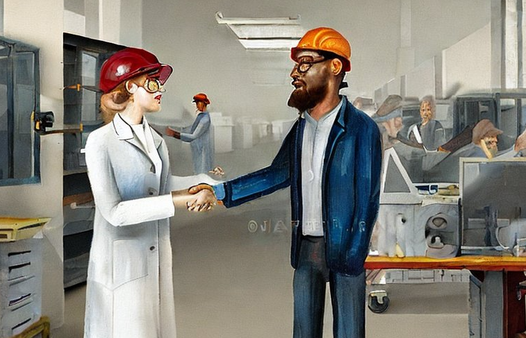

Why Should ML Engineers Learn Kubernetes?
If you came here looking for the course, feel free to jump ahead to: K8s For Data Scientists.
Kubernetes, known as K8s, is an open-source system for deploying and managing containerized applications in the cloud. An increasing amount of modern web applications are deployed on K8s. If you are an ML engineer, it is increasingly likely that either the infrastructure you use to train, monitor, or orchestrate your models is deployed on K8s, or downstream applications that consume your models are running on K8s. However, K8s is a complex system that can be intimidating to learn.
I agree with Chip Huyen that, in theory, Data Scientists shouldn’t need to learn K8s. However, the truth is: Even though you shouldn’t have to, it’s really beneficial if you do! I’ve found that I’m often constrained by infrastructure and that infrastructure is increasingly hosted on Kubernetes.
For example, I’m rarely given access to a cloud provider’s console, and instead, I have access to a K8s cluster with some data tools already installed. When something goes awry, it’s beneficial to know enough about K8s to debug the issue. Additionally, familiarity with basic concepts allows me to have more productive conversations with my team about infrastructure.
Vicki Boykis seems to agree that the investment in learning this technology is worthwhile1:

Below, I outline several reasons why learning K8s is a good idea for machine learning engineers2.
Hosted data/ML tools are not always an option
Large cloud providers offer their flavors of ML infrastructure as hosted solutions3. However, there is often a gap between these offerings and the needs of machine learning teams. For example, I’ve seen the following tools deployed alongside or in place of hosted solutions:
- Metaflow
- Kubeflow
- Argo
- JupyterHub
- Dask
- etc.
When open source isn’t enough, third-party vendors are happy to install their software on your cloud. However, you often need basic infrastructure skills to enable this. These skills often intersect with Kubernetes. While you may not be responsible for deploying the infrastructure yourself, it is helpful to understand the basics of how things work so that you can do basic debugging and troubleshooting. For example, knowing where to find logs or an API/HTTPS endpoint can unblock you in many cases.
Nobody is coming to save you
A typical first experience as a machine learning professional is that you don’t have the necessary tools to get started. This is incredibly frustrating, as making progress without the proper tools can be hard. This experience usually culminates in a conversation like this:
ML Eng: I’m excited to join ACME company! You’ve hired me to optimize marketing spending with predictive models. The issue is that we don’t have the basic infrastructure or tools necessary for me to work efficiently.
Manager: I’m confused. Can’t you install the tools you need? Isn’t that what you are for? I was expecting that you would figure it out.
ML Eng: No, I don’t know how to set up and deploy infrastructure. We need a special infrastructure or DevOps person for that.
Manager: It will be hard to ask for more resources if we don’t know the expected return on investment. Can you do the ML project first, demonstrate some value, and then we can invest in infrastructure?
ML Eng: I need some minimum tools to experiment more quickly and develop a proof of concept. Also, I need tools that might help me collaborate better with my team…
My experience is that DevOps teams are chronically understaffed and overworked. While it usually isn’t advisable to deploy enterprise software yourself on Kubernetes for security concerns, having basic skills can lift a tremendous burden off your DevOps counterparts and make it tractable for them to help you.
K8s are not a panacea for all infrastructure problems. You must operate within the constraints of your organization and existing software stack.4 However, with its growing popularity, it is increasingly likely that learning this technology will help you.
ML research is crowded. Compete on SWE skills.
One of the best ways to set yourself apart as a data scientist is through your skills. Traditional education often emphasizes learning the latest ML techniques. However, cutting-edge ML research is very competitive. It’s also an extremely crowded space.
In my experience, the bottleneck many teams face is not a lack of knowledge of cutting-edge ML techniques but software engineering skills and partners to help operationalize models. If you take some time to learn how to stand up tools and infrastructure, you will be invaluable to your team.
More importantly, deploying and integrating models into services and applications is critical to connecting ML to business problems. Learning K8s will help you do this.
Your company likely already runs K8s

Just as Python is the lingua franca of data science, K8s is becoming the lingua franca of cloud infrastructure. According to a 2021 Survey by CNCF, 96% of organizations are either using or evaluating Kubernetes. Furthermore, Stack Overflow’s 2022 Developer Survey shows that Docker and Kubernetes are the number one and two most loved and wanted tools, respectively. This is a strong indicator that K8s are here to stay.
Basic proficiency with K8s will drastically increase your chances of garnering support for your desired tools in many organizations. Proficiency with K8s increases the likelihood that:
- Your DevOps counterparts will feel comfortable with the tools you want to deploy
- You will have a shared language in which to talk to your application administrators
- You will be more likely to attract people to help you with infra 5
These factors make it much more likely that you will get the tools that meet you where you are as opposed to something a software engineer without any data science experience thinks is a good idea (which I’ve seen happen a lot!).
But isn’t it overkill?

For simple apps that you want to stand up quickly or prototype, K8s is overkill. Instead, I’m advocating knowledge of K8s as useful when working within the environments found in many companies. For example, hosting your data product on a single VM is often insufficient if you want to deploy production software. Many companies even have infrastructure that may block you from doing this with paved paths that only include Kubernetes.
Even if you are not deploying any production software, K8s can be invaluable in allowing you to deploy the tools you need. In many cases using K8s can make tasks easier. Enterprises have necessarily invested resources in creating guardrails to control costs and security. Those guardrails are increasingly built around K8s patterns6. Understanding these concepts can make operating within the confines of your company’s cloud stack easier.
You don’t need to be an expert
K8s are complicated, but you don’t need to become an expert to unlock great value as a Data Scientist. I’m not suggesting that data scientists become K8s administrators. K8s Administration is a very involved task and worthy of its own role. Unfortunately, nearly all educational material around K8s is focused on being an administrator, which is overkill for what most data scientists need.
A course?
I haven’t yet found a good resource for people like data scientists to learn Kubernetes without wading through lots of irrelevant material geared towards administrators. So my colleagues and I are considering creating a free course with data scientists in mind. If this sounds interesting, you can sign up here.